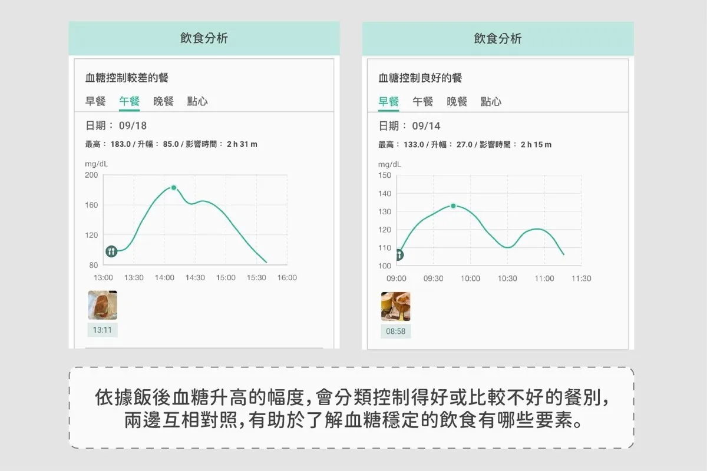
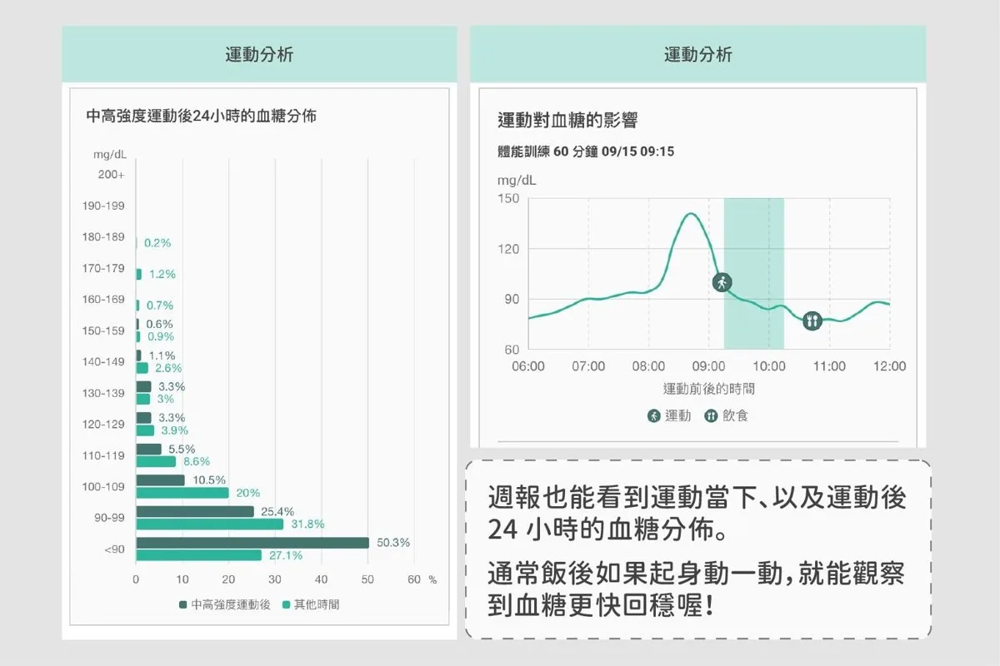
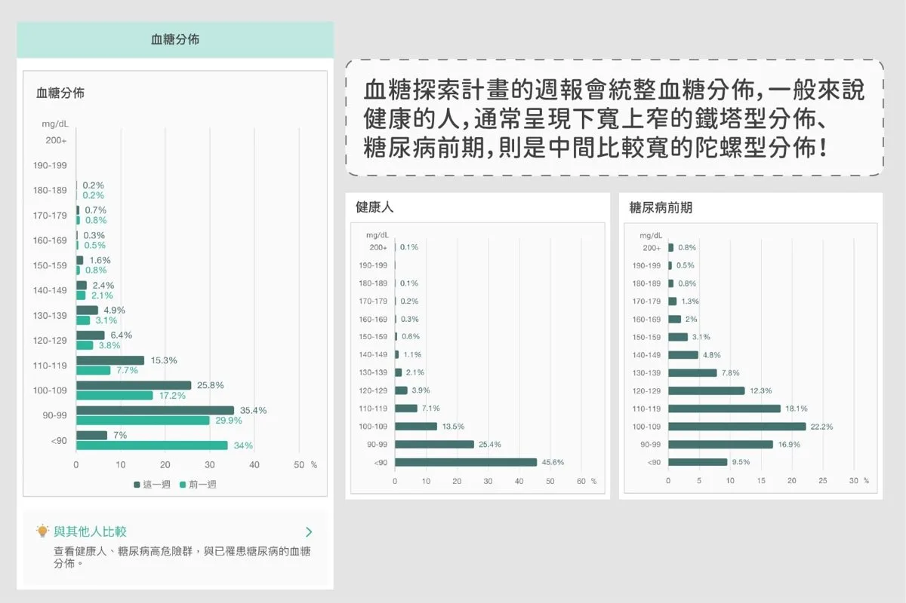
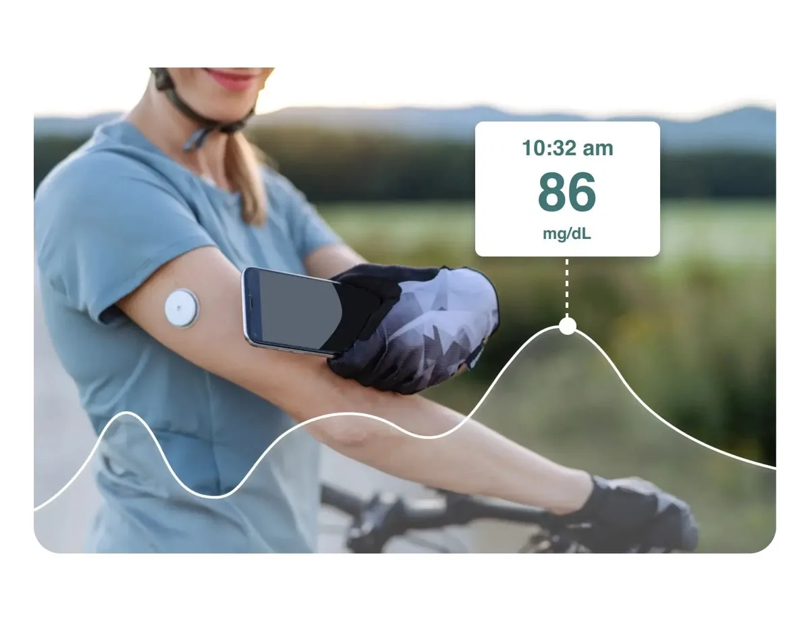
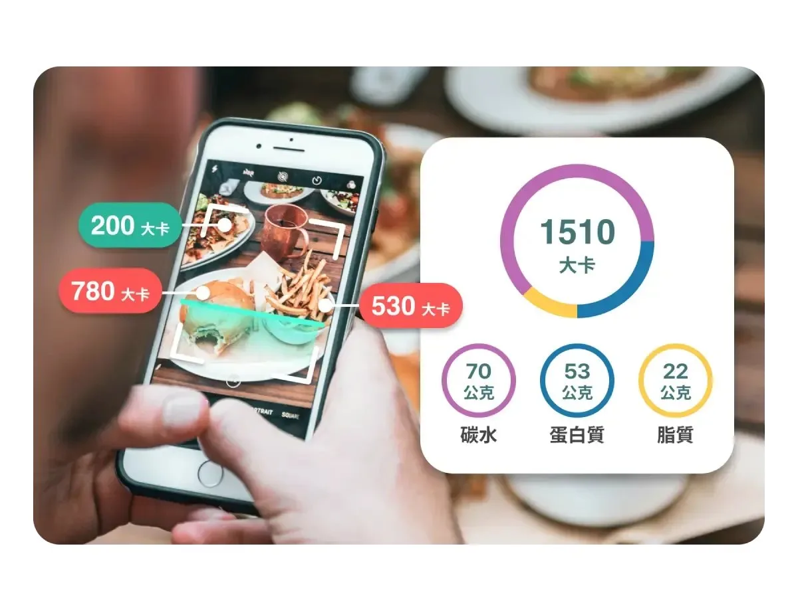
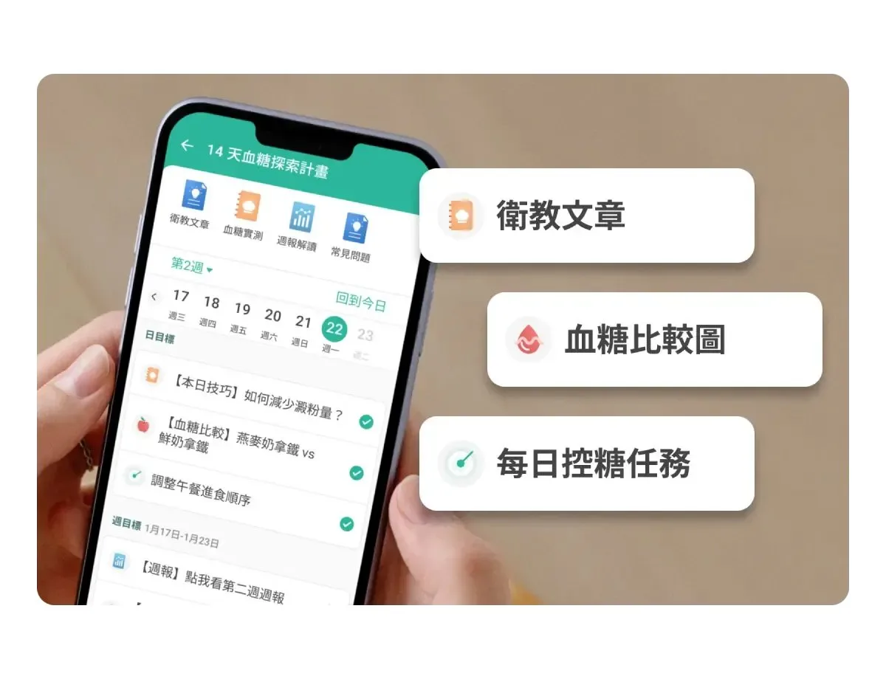
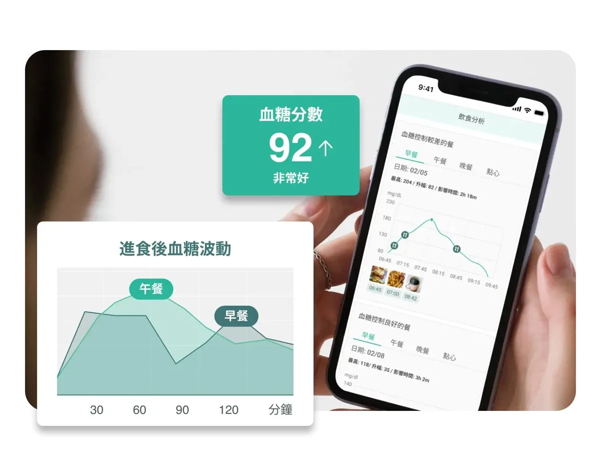
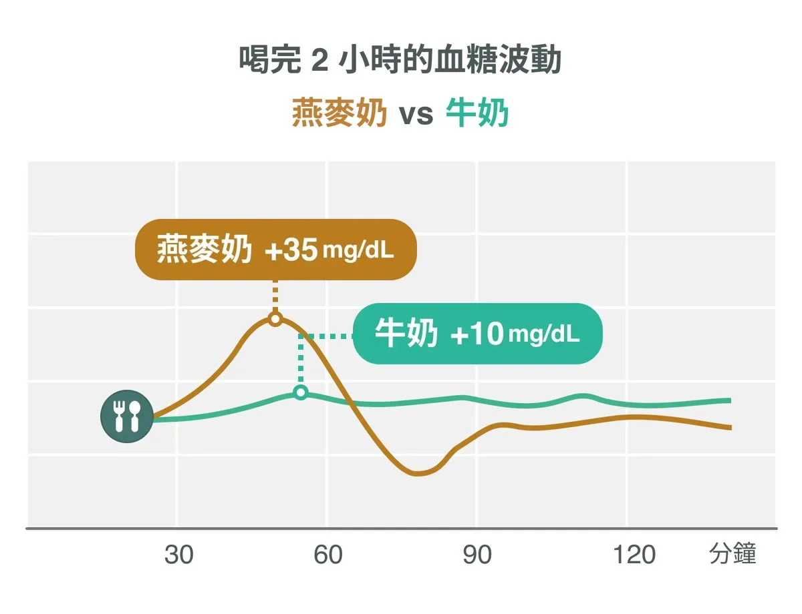
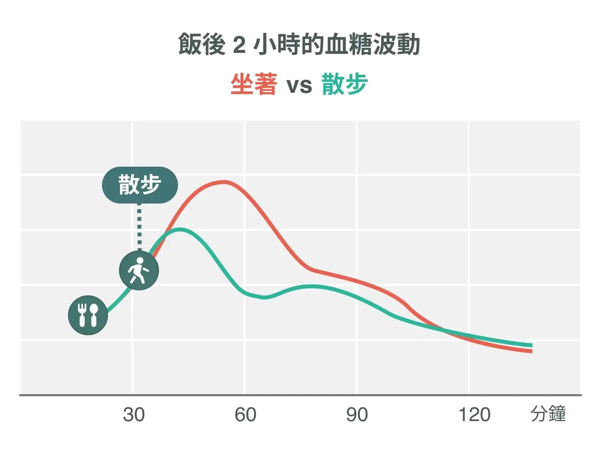
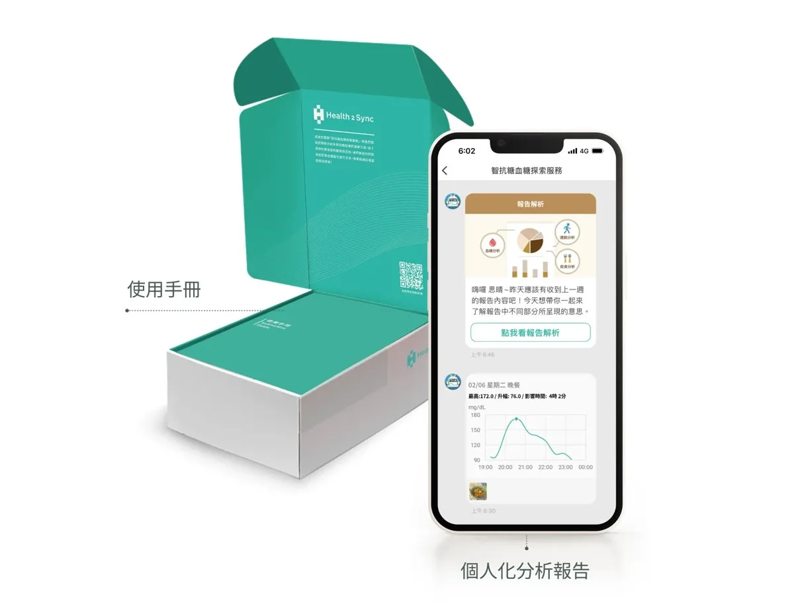

哪一餐讓血糖升最多
App 會依照飯後血糖上升的幅度，把控制得好和不好的餐點分開列出來，兩邊對照，就看得出適合自己的吃法。
思思推薦 / 駭客優選
14-Day CGM Program
智抗糖 App × CGM 連續血糖監測
在手臂貼上一個感測器，兩個星期內，手機上隨時看得到自己的血糖曲線。哪一餐讓血糖衝高、飯後走路有沒有用、睡不好隔天會怎樣，都變成看得見的數字。
Dots vs Curve
傳統血糖機量到的是單點，不知道當下血糖正在上升、下降，還是已經在最高點。連續血糖監測把點連成線，峰值多高、多久降回來，一看就知道。
What You Will See
我自己戴 CGM 的時候搭配智抗糖 App。下面三張是我用的時候截下來的畫面。

App 會依照飯後血糖上升的幅度，把控制得好和不好的餐點分開列出來，兩邊對照，就看得出適合自己的吃法。

不是只要有運動，對血糖就一定是加分。強度太高、時間太久，身體壓力變大，血糖不見得會降。運動分析可以看到運動當下和之後 24 小時的血糖分佈。

每週結束會收到一份血糖週報，把一週的血糖分佈整理出來，也可以拿第二週跟第一週比，看調整之後有沒有不一樣。
My Own Number
糖化血色素看的是兩三個月的平均血糖，看不到起伏。血糖變異係數（CV）看的是波動幅度，這個數字只有戴 CGM 才算得出來。
36% 是從糖尿病患者推導出來的門檻。健康成人的數字來自 Shah 等人 2019 年的研究（153 人，17 ± 3%）與 PREDICT 研究。9.6% 是我個人的數字。
The Program
以下取自智抗糖官方說明。

在智抗糖 App 串接 CGM，對照每天的飲食和運動紀錄，找出血糖波動的原因。

拍照就能用 AI 辨識餐點的營養素與熱量，並自動分析血糖起伏。

營養師規劃的 14 天學習進度與工具包，包含衛教文章和血糖實測。

分析一週的血糖分佈，看血糖容易升高的時間點和原因。14 天共兩份。


CGM 不是用來表演血糖有多穩的工具，而是用來校準生活方式的工具。數據只是參考，身體的感受才是關鍵。
思思醫師
血糖沒有波動，不等於這個食物就可以放心吃。有些食物吃了血糖很平，是因為身體分泌了更多胰島素把它壓下來。含大量澱粉、吃起來甜、高度加工的食物，就算曲線好看也要留意。
CGM 減重迷思 →
Order
NT$3,299NT$4,199
價格為智抗糖官網的限時體驗價，實際以客服報價為準。
How to Order
點按鈕加入「智抗糖 LINE 官方帳號」，可以先問產品和服務內容。
填寫訂購資料時輸入 思思14，享專屬優惠。
收到後依包裝內的說明把感測器貼在手臂，下載 App 完成串接，開始 14 天。
FAQ
大約 50 元硬幣大小，貼在手臂上，用一根軟針在皮下連續量測。官方說明在正常使用、沒有特別碰撞的情況下，可以洗澡、流汗、運動。
手機要有 NFC 功能：iPhone 7 以上，或有 NFC 的 Android 手機。訂購前先確認。
這個計畫是一般的健康促進服務。已經有糖尿病或其他慢性病的人，請先問過自己的醫師適不適合。
目前只支援臺灣本島和離島的智抗糖 App 用戶購買與使用。
計畫內含貼身產品，不適用七天鑑賞期。開封後如果不是產品本身的問題，不接受退貨退款，請想清楚再買。
感測器的使用期就是這 14 天。這兩週的重點是認識自己的身體對食物、運動和作息的反應，知道之後，沒戴的時候也能照著調整。
提醒：「14 天血糖探索計畫」的目的是健康促進，不具備醫療效能，用意是幫助使用者了解影響血糖健康的因素。若有需求或相關疾病，請諮詢專業醫療人員。
Read More